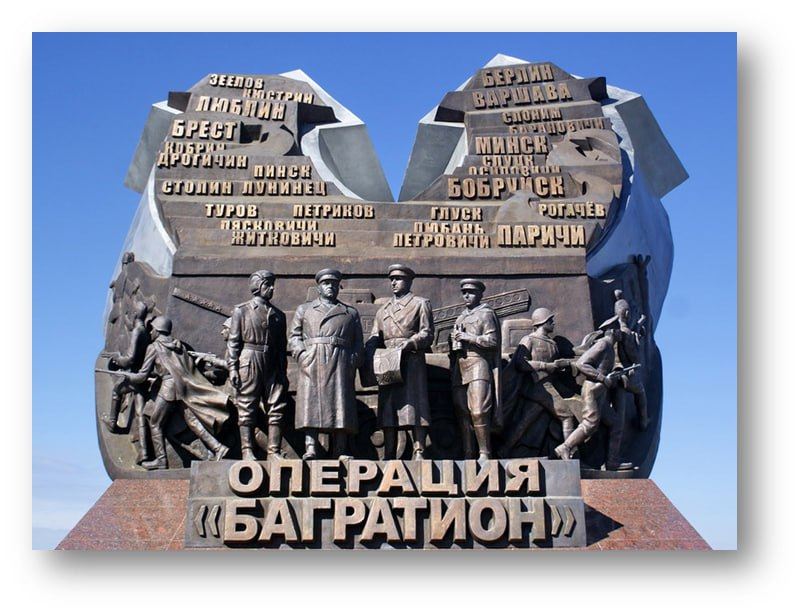

21 июня 2014-года в районе деревень Раковичи и Михайловка Светлогорского района по случаю 70-летия освобождения территории от
немецко-фашистских захватчиков был открыт мемориал "Операция "Багратион". Именно с этих мест начиналась известная военная операция.
«Багратион» вошел в учебники как самая успешная наступательная операция XX века. Семь метров воинской славы. Такова высота победного
барельефа. В 1944-м здесь были болота. Справа и слева — наступающие советские солдаты, моряки и партизаны. Фоном стали стрелы,
указывающие два главных удара Красной Армии. В июне 1944-го советские войска, используя мокроступы, волокуши, плоты и гати,
преподнесли неприятелю убийственный сюрприз. Танки, люди, артиллерия неожиданно для немцев прошли через непроходимые болота
и застали гитлеровцев врасплох, двумя главными ударами взяв в клещи немецкие армии группы «Центр». В результате наступления
была не только освобождена территория Белоруссии, но образовалась 900-километровая брешь между группами немецких армий «Юг» и
«Север». Для ее закрытия командование вермахта перебросило с других участков фронта 46 дивизий и 4 бригады. Это облегчило
наступление как союзникам на западе, так и советским войскам в Украине и Прибалтике. Из белорусских болот начинался путь на Берлин.